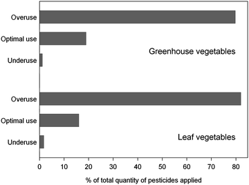

4.1 Introduction
For centuries, rotational swidden agriculture aimed at fulfilling household food needs has been the dominant form of agriculture in the mountainous areas of Thailand and Vietnam. Nowadays, this form of agriculture is difficult to find, as households are increasingly growing crops in permanent fields for their own food needs as well as for sale (Chap. 1). The process of agricultural intensification and commercialization has been accompanied by a change in the types of crops grown and the cultivation methods used, with a greater reliance on external inputs such as fertilizers and pesticides (Pingali 2001).
The increasing importance of crop protection can partly be explained by the increased pest pressure that has accompanied more intensive land use, and also the fact that farmers have a greater economic incentive to reduce crop damage as land productivity increases. For instance, surveying weed infestations across 12 maize fields with steep slopes in north-western Vietnam, Wezel (2000) found that shorter fallow periods were associated with higher levels of weed infestation, a major concern for farmers as these infestations reduced maize yields and required much labor to resolve, with farmers spending as much as 35 to 50 days weeding one hectare of maize.
The problem is that the increasing demand for better crop protection is almost solely met through an increase in the use of synthetic pesticides. Studying pesticide use in Yunnan and Guizhou in China, Xu et al. (2008) explained that the dependence of farmers on synthetic pesticides is due to the fact that farmers find pesticides easy to use and that they provide a rapid means of controlling pests, plus that there is limited knowledge among farmers and consumers about the risks of using such pesticides. Added to this, the policy framework in place encourages their use. All of these factors apply across Southeast Asia countries in general.
However, it has long been known that pesticides may be transported to environmental compartments far from their site of application, where they may severely affect non-target organisms, pollute surface and ground water, and enter the human food chain. This fact has stimulated much interest among scientists and policy makers about the issue of pesticide exposure and has led to a fundamental debate about the role of pesticides in our food system. As a consequence, numerous studies have been conducted worldwide on the fate and behavior of pesticides in agricultural areas, with the pollution of surface waters receiving particular attention.
There have been numerous studies carried out into pesticide use and risk exposure in Southeast Asia, but almost all of them have focused on lowland areas and chiefly paddy rice systems, which represent the main type of agricultural land use in these areas and which are essential for maintaining food security in the region (e.g., Dasgupta et al. 2007). Much less is known about the environmental exposure of using agricultural pesticides in mountainous areas and the effects they have on peoples’ health, though several studies carried out in northern Thailand have pointed to very significant health hazards (Stuetz et al. 2001; Kunstadter et al. 2006).
As this chapter shows, the rapid increase in agricultural pesticide use poses particular challenges for mountainous areas, for two main reasons. First, the increase in intensity of pesticide use has been particularly rapid in mountainous areas, where until recently pesticides were not used at all. This fast rate of increase, combined with limited knowledge among farmers about their correct use and health risks, has created a particularly hazardous situation. Second, high levels of pesticide application on steep slopes, together with high and intense rainfall and the presence of well-developed preferential flow pathways, has resulted in a large share of pesticide residues being transported from their site of application to adjacent environmental compartments. Due to the hydrological connection between highland and lowland areas, pesticide residues can spread to a larger area and affect many people.
This chapter addresses both the socio-economic and biophysical dimension of pesticide use, particularly in terms of the impacts and environmental exposure of using such pesticides in relation to upland agriculture. The objectives of this chapter are to quantify the increasing intensity of pesticide use, to give explanations as to why this is happening, to study the impact of pesticides on the environment and to discuss possibilities for reducing exposure and increasing the efficiency of pesticide use.
The chapter is based on detailed information gained from studies carried out in two case study areas in Thailand and Vietnam, those introduced in more detail in Chap. 1 of this book. First, the Mae Sa area in the northern uplands of Thailand represents a watershed with rapidly intensifying land use, as the area has an intensive horticultural production system in which farmers grow high-value vegetables, fruit and flowers. Farmers here have easy access to nearby urban markets and use inputs intensively. Second, Chieng Khoi in the north-western uplands of Vietnam represents an area with lower levels of market access, and where farmers cultivate rice for subsistence in the valleys, while on hillsides they mainly grow maize and cassava as cash crops. Traditionally farmers practiced shifting cultivation in this area, but fallow periods have shortened and most sloping fields are now cultivated year-on-year.
The chapter is organized as follows. Section 4.2 places the increased use of pesticides in the mountainous areas of Thailand and Vietnam in the context of general pesticide use trends in these countries. Section 4.3 summarizes the situation in terms of pesticide use in the mountainous areas of Thailand and Vietnam, after which Sect. 4.4 gives an account of the eco-toxicological risk and environmental exposure created by such use. Section 4.5 discusses the policy options for rationalizing pesticide use in mountainous areas, after which conclusions are offered in Sect. 4.6.
4.2 General Trends in Relation to Intensified Pesticide Use in Thailand and Vietnam
The problems of pesticide use in the mountainous areas of Thailand and Vietnam should be seen within the general context of rapidly intensifying levels of pesticide use across the fast growing economies of Southeast Asia, including Indonesia, Malaysia, Thailand, Philippines and Vietnam. Pesticide use in Laos, Cambodia and Myanmar on the other hand, remains relatively low, since these countries have not yet experienced the same type of rapid agricultural change as other countries in the region.
In Thailand and Vietnam, pesticides were first introduced in the mid-1950s and their use remained relatively modest until economic development accelerated. In Vietnam, this acceleration can be dated to the start of economic liberalization in the mid-1980s, when the private sector was allowed to engage in pesticide importation and distribution and when farmers were given use rights over their agricultural land, allowing them to make independent farm management decisions. From 1991 to 1998, the volume of agricultural pesticides, as formulated products (that is, active ingredients as well as inert ingredients such as solvents, emulsifiers and adjuvant), increased from 20 million to 30 million kg and subsequently to 77 million kg in 2007, which suggests an average annual growth rate of 8.5 % over this 16-year period.
The left-hand diagram in Fig. 4.1 shows growth in the use of formulated pesticide products per hectare of agricultural land for Thailand and Vietnam. Although Vietnam uses more pesticides per hectare of land, land productivity in Thailand is higher and as a result, the output per volume of pesticides is about the same for both countries, as shown in the right-hand diagram. Most importantly, the figure shows that for both countries the growth in pesticide use has been much faster than the growth in agricultural output, as the average pesticide productivity (i.e., USD of output per kg of pesticides used) has steadily declined. For Thailand, the increase in pesticide use can mainly be attributed to increasing herbicide use, of which glyphosate and paraquat – two herbicides the use of which has been restricted in several countries but not in Thailand – accounted for 53 % of use in 2010.
Fig. 4.1
Pesticide use in Thailand and Vietnam for 1997, 2003 and 2007. Left: Pesticide use per hectare of arable and permanent crop land. Right: USD of output per kg of applied pesticides (Notes: Pesticides in quantity of formulated product (for insecticides, herbicides, fungicides/bactericides and rodenticides). (Sources: Office of Agricultural Regulation (Thailand) 2011; Nguyen 2011; The World Bank 2011))
4.3 Pesticide Use in the Mountainous Areas of Thailand and Vietnam
4.3.1 Pesticide Use Within Intensive Upland Horticulture: Mae Sa, Thailand
The pace of land use change has been particularly fast in the Mae Sa watershed in northern Thailand. In 1974, 70 % of the land was used for growing rice, as shown in Table 4.1, yet by 2006, this had reduced to just 6 %, while the area under field crops and fruit trees was 81 %. The change in land use from rice to intensive cash cropping, including seasonal field crops, fruit trees, vegetable greenhouses and cut flowers, has substantially increased the income and living standard of farm households in the area, but has had a dramatic effect on the quantity of pesticides used.
Table 4.1
Land use change in the Mae Sa watershed, Thailand, for the period 1974–2006
1974 | 2006 | |||
|---|---|---|---|---|
Area (ha) | % | Area (ha) | % | |
Paddy rice | 696 | 49 | 51 | 5 |
Upland rice (swidden) | 292 | 21 | 6 | 1 |
Maize/poppy (swidden) | 82 | 6 | – | – |
Other seasonal crops | 132 | 9 | 454 | 42 |
Fruit trees | 48 | 3 | 426 | 39 |
Tea | 165 | 12 | – | – |
In the traditional upland cultivation systems used in Thailand, farmers burn fallow vegetation after 10–15 years in order to grow upland rice, but do not use chemical fertilizers or synthetic pesticides. For instance, farmers from the Karen ethnic minority in Thailand still today mix numerous upland rice varieties with beans, taro, pumpkin and many other crops. Pest problems exist within such systems, but infestation rates are low and never threaten an entire rice yield, and as a result, yields are relatively low but stable. As fallow cycles have reduced with the ongoing process of land use intensification, farmers have started to report more intensive pest problems in upland rice growing areas, with some resorting to the use of insecticides locally. When farmers start producing cash crops, such as maize, then they also tend to start applying mineral fertilizers and herbicides, and as intensification continues and higher value crops such as cabbages, pumpkins, garlic and onions are adopted, then increasing amounts of insecticides and fungicides are more widely applied.
To quantify the level of pesticide use and to scrutinize the relationship between pesticide use and land use intensification, we carried out a farm-level survey in the Mae Sa watershed area of the northern uplands of Thailand in 2010, using a structured questionnaire with 295 farm managers and comprising 20 % of the farms in the area. The recall period for the survey was from April 2009 to March 2010. For each plot and each crop we asked respondents to name the major pest problems they faced at that time and the methods they applied to control these problems. If using synthetic pesticides, we determined the type of chemical and the quantity of undiluted substance used. For the analysis, we quantified the amount of each pesticide used in monetary terms (baht), in terms of active ingredients (kg) and its potential environmental impact, for which we used the Environmental Impact Quotient (EIQ) (Kovach et al. 1992; Levitan et al. 1995). The EIQ represents a holistic approach quantifying the hazard potential of a pesticide, and differentiates between the potential risk for consumers, farm workers and the environment.
Farmers mentioned over 50 different pest problems affecting their crops, and Table 4.2 shows a list of the 16 most frequently mentioned of these. We should note that this list is based on a self-assessment carried out by the farmers in relation to the pests affecting their fields, those identified using pictures. As a result, these assessments might differ from those made by experts. Farmers are, for instance, usually well able to identify insect pests, but have more problems distinguishing plant diseases from fungi or bacterial infections. Thrips and beet armyworm were the most common pests identified, affecting 27 % and 17 % of the observed fields respectively. Thrips affected 89 % of the observed greenhouses growing bell pepper and 70 % of the observed fields growing roses.
Table 4.2
Main pest problems by crop in the Mae Sa watershed area in Thailand, 2010. Shows percentage of observed fields affected by the pest
Pest problema
| All cropsb
| Chayote | Bell peppers | Chinese cabbage | Lettuce (various) | Onions | Chrysan-themum | Roses | Litchi |
|---|---|---|---|---|---|---|---|---|---|
Thrips | 26.6 | 5.6 | 89.2 | 1.4 | – | 25.0 | 54.3 | 70.4 | 4.6 |
Beet armyworm | 16.9 | – | 19.1 | 34.7 | 22.2 | 14.3 | 7.8 | 7.4 | 0.8 |
Powdery mildew | 13.8 | 22.2 | 8.3 | 31.9 | 8.3 | 39.3 | 16.4 | 22.2 | 1.5 |
Malformations | 12.5 | 48.9 | 26.0 | 5.6 | 1.4 | 3.6 | 19.0 | – | 3.9 |
Cabbage webworm | 11.1 | 1.1 | 10.3 | 21.5 | 11.1 | 3.6 | 8.6 | – | 3.9 |
Rust | 10.1 | 8.9 | 27.9 | 4.9 | 2.8 | 7.1 | 3.5 | 37.0 | 0.8 |
Downy mildew | 10.0 | 2.2 | 9.3 | 16.0 | 2.8 | – | 28.5 | 3.7 | 8.5 |
Cabbage looper | 9.4 | – | 6.9 | 19.4 | 2.8 | – | 7.8 | 11.1 | 2.3 |
Red mite | 9.4 | 1.1 | 19.1 | 0.7 | – | – | 31.0 | 88.9 | – |
Leaf miner fly | 8.3 | – | 2.0 | 6.9 | 36.1 | 39.3 | 21.6 | 7.4 | 3.1 |
Common cutworm | 7.4 | 1.1 | 2.5 | 24.3 | 4.2 | – | 6.9 | 3.7 | – |
Diamondback moth | 7.2 | – | 2.9 | 14.6 | 4.2 | – | 6.0 | 3.7 | – |
Shield bug | 6.1 | 1.1 | 0.5 | 2.1 | 2.8 | – | – | 3.7 | 39.2 |
White fly | 5.8 | 5.6 | 4.9 | 8.3 | 2.8 | – | 0.9 | – | – |
Fruit borer | 4.4 | – | 0.5 | – | – | – | – | – | 36.9 |
Fields observed | – | 90 | 204 | 144 | 72 | 28 | 116 | 27 | 130 |
The effect of these pest problems on crop yields, as estimated by the farm managers, is shown in Fig. 4.2, revealing that high value crops were also subject to high rates of actual yield loss. For instance, roughly 40 % of bell peppers and roses in the Mae Sa watershed were lost because of pests in 2010.
Fig. 4.2
Crop yield losses due to pests in the Mae Sa watershed area in Thailand, 2010 (Note: These are actual losses after pest control was applied, and represent averages over all farmers growing the crop)
As can be seen from Fig. 4.3, there was a positive association between the profitability of a crop and the intensity of pesticide use. Few pesticides were applied on the paddy rice fields – as the crop is almost solely used for home consumption, or to the feed maize – as this is used to feed the farm animals. Relatively few pesticides were also used on litchi, as the profitability of this crop was low and farmers were trying to reduce costs (Schreinemachers et al. 2010). Chayote (Sechium edule) was the only commercial crop on which relatively few pesticides were applied, as it is not much affected by pests. The greatest amounts of pesticide use were reported for bell peppers, tomatoes and cut flowers (chrysanthemums and roses).
Fig. 4.3
Gross margins versus pesticide use for different crops in the Mae Sa watershed in Thailand, 2010 (Source: Adapted from Schreinemachers et al. (2011))
Schreinemachers et al. (2011) showed that farmers in the study area were extremely dependent on synthetic pesticides for managing pests, and we found that synthetic pesticides were used by 97 % of farmers, with 77 % relying solely on synthetic pesticides to control pests. Synthetic pesticides were applied across 79 % of the planted area, while non-synthetic methods were used on only 8 %. Farmers in the Mae Sa watershed used 13 kg of active ingredients per hectare, which is about 3.5 times the national average in Thailand, and of this amount, 54 % was fungicides and 29 % was insecticides while herbicides accounted for only 11 % of the amount of pesticides used.
4.3.2 Pesticide Use in the Paddy Rice Systems of Chieng Khoi, Vietnam
To assess how rice farmers in mountainous areas in north-western Vietnam use pesticides and how they perceive their own exposure to pesticide risk, we randomly selected 50 rice farmers for interviews in 2010, 10 farmers from each of the five largest villages in Chieng Khoi. It is worth mentioning that farmers in Chieng Khoi used pesticides only on their rice paddies at this time, but not on their other fields. We asked the respondents to list the major pest problems occurring in the spring rice cropping season, as well as the respective pesticides and application strategies used to control these. We also asked about the purchase and handling of pesticides, and for them to name the primary source of fresh water used for household consumption.
On average, each farmer cultivated 0.15 ha of paddy rice and all farmers used pesticides to control pest problems. The most widely used insecticides were Conphai 15WD and Ofatox 400EC, containing the active ingredients imidacloprid (a neonicotinoid pesticide), fenitrothion (an organophosphate) and trichlorfon (an organophosphate), respectively. During the spring cropping season, farmers applied pesticides, mainly insecticides, three to four times after transplanting, yielding a total average dose of 0.9 kg ha−1 of active ingredients. It is noteworthy that this amount was about twice the upper dosage recommended by the distributing companies. In total, 88 % of all farmers applied pesticides when their paddies were ponded (i.e., under water), and of these, 58 % did not close-off the drainage channels from their paddies during application. For those farmers who closed the drainage channels, they opened them again 1–2 days after application.
Two-thirds of farmers washed their spraying equipment, commonly a backpack sprayer, after use, in one of the two major irrigation channels; while others used water from the river for cleaning. These surface water sources were also the main locations for bathing and doing the laundry for almost all the interviewed farmers. Groundwater wells also played a key role in Chieng Khoi, providing water for drinking and cooking to 96 % of the households. Furthermore, we asked the farmers to appraise the health risks they were being exposed to during pesticide application, and in response, 42 % of the respondents thought there was no risk, while 44 % said the risk was very small. Only 12 % felt the risk exposure to be medium, while 2 % considered the hazard potential as significant. With regard to environmental pesticide exposure, 28 % said they had noticed a problem with water contamination when using pesticides in some form or another in the Chieng Khoi area. In summary, these results point to the improper use and handling of pesticides within rice farming communities in the mountainous regions of Vietnam.
4.4 Pesticide Exposure and Eco-toxicological Risk Assessment in the Mountainous Areas of Thailand and Vietnam
4.4.1 Measuring the Fate of Pesticides in Mountain and Remote Areas
Surface and subsurface run-off, and leaching, largely determine the amount of pesticides transferred from agricultural fields and orchards to surface and groundwater sources (Leu et al. 2005; Kahl et al. 2007, 2008), though spray drift can also be a determinant (Siebers et al. 2003; Schulz et al. 2001). After their application, pesticides are subject to various biological, chemical and physical processes, the most important of which are sorption–desorption – leading to retardation, and degradation – which causes dissipation. Degradation can be caused by chemical as well as microbiological reactions and normally tends to diminish the toxicity of pesticides; although occasionally, the metabolic degradation products used are more toxic than the parental compounds (Cheng 1990). Measured dissipation may also be due to volatilization (Ferrari et al. 2005) and the formation of bound residues (Gevao et al. 2000). In Europe and North America, there is much data on the impact of pesticides and on the level of exposure to environmental pesticides due to agriculture, but for the mountainous areas of Southeast Asia, there have been only a few studies published that deal with pesticide exposure.
For a typical soil in northern Thailand (Haplic Acrisol, following the FAO classification), Ciglasch et al. (2005) investigated vertical water flux dynamics and pesticide leaching patterns on a plot scale. On a 10-year-old litchi (Litchi chinensis Sonn. or “lychee”) orchard, the authors equipped two excavated soil trenches with tensiometer-controlled glass suction lysimeters. A lysimeter is a vessel containing local soil placed with its top flush to the ground surface and is typically used to study phases of the hydrological cycle, such as infiltration, run-off and evapotranspiration, or the soluble constituents removed in drainage, among other uses. The lysimeters were installed at a depth of 55 cm, indicating the transition between the B1 and B2 horizons. The lysimeters were directly connected to on-line solid-phase extraction devices comprising vacuum chambers and cartridges filled with graphitized non-porous carbon. In 2001, nine insecticides with varying physico-chemical properties were applied on the soil surface, and leaching was monitored for 8 weeks. Total recovery of pesticides ranged between trace levels and 1.3 %. Recovery values however, were negatively correlated with respective sorption coefficients. After a heavy rain event of 80 mm occurred shortly after application, the authors observed that between 0.001 % and 2 % of the applied mass of pesticides leached instantaneously to a depth of 55 cm. These fractions represented between 75 and 100 % of the total measured mass of leached pesticides, indicating that preferential flow paths dominate the displacement of pesticides, at least after heavy rain events.
Particularly in mountainous areas, lateral surface and subsurface flows may be key processes in the loss of pesticides from agricultural fields to adjacent environmental compartments. Under certain environmental conditions, lateral flow processes may be more important than vertical flow processes, but there has been much less research done on the lateral subsurface transport of pesticides. In general, it is known that antecedent soil wetness, bedrock topography and soil depth control whether vertical preferential and matrix flow reaching the bedrock participate in lateral flow (Buttle and McDonald 2002). Kahl et al. (2008) summarized the various forms of lateral preferential flow that may take place, including movement as a thin layer above infractured bedrocks, run-off along micro-channels above the bedrock surface, pipe flow at the base of the soil profile and flow through a self-organizing interconnection of macropores and mesopores embedded in the soil matrix, among others.
The continuous introduction of new active ingredients and commercial pesticide formulations in remote mountainous areas necessitates the permanent testing and evaluation of commonly used analytic procedures for measuring the concentration of currently applied pesticides in various environmental compartments, such as in sediment, or in surface water and groundwater. In developing countries in general, and in remote and rural regions in particular, the monitoring and exposure assessment of pesticides is often constrained by the remoteness of the area and the lack of accredited laboratories able to carry out analysis. Time gaps, for example, between the date of sampling and the date of analysis, are thus unavoidable. The implementation of monitoring programs in mountainous areas consequently calls for a thorough and critical study of storage conditions and the associated storage stabilities of the target analyses, particularly during shipment, thus minimizing the risk of pesticide degradation. In a number of studies, the solid phase extraction (SPE) technique has been demonstrated to be the method of choice for conserving pesticides during storage and shipping, and until further analysis can be carried out (e.g., Ciglasch et al. 2005; Deger et al. 2000; Pichon 2000). Since the required laboratory devices used for applying SPE are manageable and easy to handle, this method can be used in almost any remote location. Anyusheva et al. (2011) tested the long-term stability of several pesticides commonly applied in the mountainous areas of Vietnam, having been adsorbed by SPE cartridges. The authors compared the recovery values of pesticides stored for a period of 119 and 319 days under frozen conditions at−18 °C. The results indicate that storage time on SPE sorbent material principally impacts upon pesticide stability; however, the recovery values of the four pesticides (atrazine, fenitrothion, metalaxyl, chlorpyrifos) measured after storage for 319 days still exceeded the generally acceptable criteria of 70 %, indicating that longer storage times can be acceptable at least for selected pesticides. Nevertheless, the general recommendation is to minimize storage time, keeping the period between field sampling and analysis as short as possible.
4.4.2 Eco-toxicological Risk Assessment of Pesticide Concentrations Measured in the Mae Sa River in Northern Thailand
The mountainous areas of northern Thailand are highly susceptible to the contamination of surface waters due to the application of pesticides in agriculture. Froehlich et al. (see Chap. 3) showed that <1–11 % of the initially applied pesticide mass might be lost from the place of application into adjacent surface waters, a loss rate much higher than in European countries where a rule-of-thumb figure of about <0.1–1 % has been identified (Flury 1996). The main reasons for the higher rates in northern Thailand are the steep slopes, high levels and intensity of rainfall and the presence of well-developed preferential flow pathways.
Due to the toxic nature of pesticides, once they enter surface waters they have to adversely affect the local aquatic ecosystem. The adverse effect of a pesticide on the aquatic ecosystem depends mostly on its input rate to the stream or lake and its toxicity. In order to quantify and characterize the toxicity of a pesticide, critical concentrations (Ccrit) such as the median lethal concentration (LC50), the median effect concentration (EC50) or the no-effect concentration (NOEC) are experimentally determined and used in an eco-toxicological risk assessment (Palma et al. 2004). The LC50 of a pollutant is the concentration at which 50 % of individuals of a test population are killed due to exposure to the pollutant. The EC50 has the same statistical meaning as the LC50, but is related to sub-lethal effects. In the case of fish, the number of eggs per female affected by the concentration of a contaminant is a good way to establish the presence or not of such sub-lethal effects. The NOEC is the concentration of a pollutant that does not harm a test species with regard to the effect under study.
Table 4.3 shows the LC50, EC50 and NOEC for seven pesticides used in the Mae Sa watershed area in Thailand. In toxicological studies, toxicity is typically determined for species of the three main trophic levels: algae (producers), zooplankton (consumers I) and fish (consumers II). A herbicide such as atrazine, that is, a compound that was designed for weed control, has a low EC50 with regard to algae but a very high EC50 with regard to zooplankton. For insecticides such as cypermethrin; however, the opposite is true; it has a high EC50 for algae but a very low EC50 for zooplankton.
Table 4.3
Toxicity (in water) of the seven selected pesticides under study
Pesticide | Algae | Zooplankton | Fish | |||
|---|---|---|---|---|---|---|
EC50 (μg L−1) | NOEC (μg L−1) | EC50 (μg L−1) | NOEC (μg L−1) | LC50 (μg L−1) | NOEC (μg L−1) | |
Dichlorvos | 52,800 | 4,730 |
0.19
| – | 550 | 110 |
Atrazine | 59 |
100
| 85,000 | 250 | 4,500 | 2,000 |
Dimethoate | 90,400 | 3,200 | 2,000 |
40
| 30,200 | 400 |
Chlorothalonil | 210 | 33 | 84 | 9 | 38 |
3
|
Chlorpyrifos | 480 | 43 | 0.1 | 4,6 | 1.3 |
0.14
|
Endosulfan | 2,150 | – | 440 | – | 2 |
0.0001
|
Cypermethrin | >100 | 1,300 | 0.3 | 0.04 | 2.8 |
0.03
|
In order to assess the potential risk to aquatic ecosystems of using pesticides, a frequently used approach is the so-called risk quotient (RQ) (Commission of European Communities 2003; Palma et al. 2004; Vryzas et al. 2009). The RQ is computed as a function of environmental exposure and eco-toxicological effects, and is the ratio between the predicted environmental concentration (PEC) and the predicted no-effect concentration (PNEC).
(4.1)
An RQ value higher than unity indicates that it is likely that the compound poses a significant risk to the aquatic environment. If the RQ value is lower than unity it is likely that an unacceptable effect will not occur. Typically, the PEC is derived from simulation studies; for instance, based on exposure or transport models. Measured data are however more reliable than simulated data and these are to be preferred if available. The PNEC value of a pesticide is derived from one of the above mentioned critical concentrations (Ccrit). If available, the NOEC is used as a risk indicator, yet if NOEC data are missing then the lowest acute toxicity of the LC50 and EC50 can be used. To take into account the uncertainty inherent in extrapolating from laboratory toxicity tests and a limited number of species to the “real” environment, Ccrit is divided by the so-called assessment factor (AF) to derive the final PNEC.
(4.2)
The AF depends on the number and type of available toxicity data and has values of 10, 100 or 1,000. For further details on the derivation of AF, see Commission of European Communities (2003).
Sangchan et al. (Accepted) closely monitored the dynamics of pesticide concentrations in the Mae Sa River in Thailand. Between May 2nd and 6th 2008, a run-off event was sampled at the headwater station, during which time water samples were taken with a high temporal resolution (10 min with six samples mixed to one composite sample, resulting in an hourly resolution). Based on these data, an RQ-based eco-toxicological risk assessment was performed (Table 4.4). Six out of the seven pesticides being investigated were detected in the stream water during the event. Only dichlorvos, a pesticide with a short half-life and a low Koc value, was not detected in the samples. RQ values based both on mean and maximum concentrations of atrazine and dimethoate were one to three orders of magnitude below unity. For chlorpyrifos and cypermethrin, the RQ values exceeded significantly the threshold of unity. Also, extremely high RQ values were found for endosulfan, for based on the mean concentration, the RQ value was 20,000. Similarly high RQ values were found for endosulfan, also within the framework of a long-term monitoring campaign (data not shown). The situation for chlorothalonil was not as clear as for the other pesticides, with a mean concentration yielding an RQ value distinctly below unity, whereas the RQ computed based on the maximum concentration was twice the threshold. For all pesticides, RQ values based on the maximum concentration were about one order of magnitude higher than the RQ values calculated from the mean concentrations.
Table 4.4
Results of the eco-toxicological risk assessment of pesticide concentrations measured in the Mae Sa river, northern Thailand
Pesticide | Predicted Environmental Concentration (PEC) | Assessment Factor (AF) | Predicted No Effect Concentration (PNEC) | Risk Quotient (RQ) | ||
|---|---|---|---|---|---|---|
Mean μg L−1
| Max μg L−1
| – 1 – | μg L−1
| Mean – 1 – | Max – 1 – | |
Dichlorvos | n.d. | n.d. | 100 | 0.0019 | – | – |
Atrazine | 0.03 | 0.12 | 10 | 10 | 0.003 | 0.012 |
Dimethoate | 0.10 | 0.57 | 10 | 4 | 0.03 | 0.14 |
Chlorothalonil | 0.04 | 0.63 | 10 | 0.3 | 0.13 | 2.10 |
Chlorpyrifos | 0.08 | 0.54 | 10 | 0.014 | 5.7 | 38.6 |
Endosulfan | 0.02 | 0.09 | 100 | 10−6
| 20,000 | 90,000 |
Cypermethrin | 0.06 | 0.2 | 10 | 0.003 | 20 | 66.7 |
The results from the risk assessment show that among the seven investigated pesticides, endosulfan posed by far the most serious environmental hazard. Eliminating this pesticide from stream water would; therefore, drastically improve water quality and strongly impair the pesticide-induced stress experienced by the aquatic ecosystem in the Mae Sa River. Although endosulfan has been officially banned under Thai law since 2004, our monitoring data, as well as the survey data of Schreinemachers et al. (2011), prove that this pesticide is still in use. Therefore, more efforts are urgently needed to put this law into action, and farmers must be better educated and trained in the safe and environmentally-friendly handling of pesticides. Beyond that, the presented data underline the importance of using data with a high temporal resolution in risk assessments. Taking water samples over longer periods, such as a day or a week, averages out short-term concentration peaks, which typically show up during and shortly after heavy rain events (see Chap. 3). If data with a lower temporal resolution are used, the extreme short-term exposure of organisms might remain undetected, leading to an under-assessment of the eco-toxicological risk associated with the input of pesticides into surface waters.
4.4.3 Loss of Pesticides from Paddy Rice Fields in Northern Vietnam
According to the Vietnamese Ministry of Agriculture and Rural Development (MARD 2003), only 20 % of the uplands population in northern Vietnam has access to clean water, as local people rely on surface and groundwater for drinking purposes. Especially in rural regions, water sources such as wells and irrigation channels are susceptible to pesticide contamination, because they are either integral parts of, or connected to the paddy rice irrigation systems.
Anyusheva et al. (2012) and Lamers et al. (2011) conducted a series of field and watershed studies in Chieng Khoi in 2008, in order to quantify the loss of pesticides from paddy rice fields into adjoining environmental compartments such as fish ponds, wells or receiving streams. On the field scale, the experimental set-up included the monitoring of the water balance and of pesticide concentrations (dimethoate and fenitrothion) in the various surface water compartments of a typical paddy field-fish pond farming system during the spring and summer crop season (Fig. 4.4). The experimental paddy field (550 m2) and fish pond (150 m2) were linked by an irrigation system located at the lower end of a rice field topo-sequence. Irrigation water was provided through an adjacent irrigation channel and discharged into the paddy field by means of a bamboo pipe. Paddy water was first drained into the fish pond before being discharged into a stream. The bunds of the paddy rice field and fish pond were reinforced to prevent any accidental flows into or out of the adjacent fields. The irrigation scheme was controlled in close cooperation with the local farmer, so as to represent local water management practices. More details are given in Anyusheva et al. (2012).
Fig. 4.4
Diagram of the combined paddy field-fish pond system (Source: Anyusheva et al. (2012))
Results from the field study, published in Anyusheva et al. (2012), reveal that during the spring and summer crop season, respectively 1 % and 17 % of the fenitrothion, and 5 % and 41 % of the dimethoate quantities were lost from the paddy field to the fish pond. Figure 4.5 shows the pesticide dissipation found in the water of the rice paddies and fish ponds over a 14 day period and after pesticide application. In both cropping seasons, the maximum concentrations appeared shortly after application and then rapidly declined during the next days following a first order kinetic. During the spring season, the concentration of dimethoate and fenitrothion dropped below 0.1 and 0.01 μg L−1 two weeks after application, corresponding to calculated DT50 values of 0.3 and 0.2 d respectively. During the summer cropping season, concentrations also declined by more than 98 % in the 24 h after application for fenitrothion and in the 48 h after application for dimethoate, which corresponds to DT50 values of 0.2 and 0.8 d respectively. In both seasons, the pond water was contaminated by a considerable amount of pesticides entering the fish pond with the drainage water from the above-lying rice paddy. The maximum concentrations of dimethoate and fenitrothion were 22 and 0.56 μg L−1 and 101 and 39 μg L−1 during the spring and summer cropping seasons respectively. On the other hand, drainage from the fish pond into the receiving stream resulted in a total loss of 0.1 and 7 % and 0.01 and 3 % of the applied masses of dimethoate and fenitrothion during the spring and summer season respectively.
Fig. 4.5
Measured concentrations of dimethoate (▲) and fenitrothion (o) in paddy surface water and water in lower lying fish ponds during the spring (left) and summer (right) rice crop seasons in Chieng Khoi, Vietnam in 2010 (Source: Modified after Anyusheva et al. (2012))
From this field study, it can be concluded that the loss of pesticides from paddy rice fields by means of surface run-off is mainly governed by the physico-chemical properties of pesticides, such as their level of solubility, and by common water management practices expressed; for example, through hydraulic residence times and water holding periods. Hence, one key recommended strategy for reducing pesticide run-off from rice paddies is to significantly extend the length of the water holding period during and shortly after application.
Concomitant to the paddy field experiment, Lamers et al. (2011) conducted a study on the watershed scale aimed at examining the environmental exposure to river and ground water pollution in the Chieng Khoi catchment. For this, they monitored the concentrations of four commonly applied pesticides in the river (imidacloprid, fenitrothion, fenobucarb and dichlorvos) at two gauging stations installed at midstream and outlet positions within the watershed. The total rice growing areas covered by these gauging stations were 25 and 64 ha respectively. Furthermore, eight groundwater wells used for household water consumption within the watershed area (including drinking water) were sampled in April, August and September.
Results published in Lamers et al. (2011) indicated that pesticide run-off losses from the watershed ranged from 0.4 % of the total applied mass for dichlorvos, to 16 % for fenitrothion. At both gauging stations, all tested pesticides were detected at least once; however, only imidacloprid was measured in concentrations above the detection limit at all sampling dates. The mean measured concentrations at the gauging stations could be clearly ranked in the following order: fenubocarb, imidacloprid, fenitrothion and dichlorvos. Table 4.5 shows the total pesticide loss from the watershed for the applied mass of imidacloprid, fenubocarb, fenitrothion and dichlorvos at the midstream and outlet positions. These pesticide losses were highly correlated with the physical-chemical properties of the octanol-water partition coefficient and the water solubility levels. Figure 4.6 clearly indicates that run-off losses significantly increased with increasing water solubility and with a decreasing partition coefficient.
Table 4.5
Mean and maximum pesticide concentration, number of detections and total pesticide loss measured at the midstream and outlet positions (in brackets) of the receiving stream in the Chieng Khoi catchment, Vietnam, during the spring cropping season 2008
Substance | Chemical group | Mean concentration [μg L−1] | Maximum concentration [μg L−1] | Number of detectionsa [%] | Total pesticide loss [kg] | Total pesticide loss [%] |
|---|---|---|---|---|---|---|
Imidacloprid | Neonicotinoid | 0.12 (0.19) | 0.26 (0.48) | 100 (100) | 1.19 (0.39) | 16.0 (13.4) |
Fenubocarb | Carbamate | 0.36 (0.33) | 1.25 (1.70) | 83 (67) | 1.80 (1.06) | 6.4 (9.2) |
Fenitrothion | Organo-phosphate | 0.06 (0.04) | 0.15 (0.11) | 83 (83) | 0.21 (0.17) | 0.6 (1.3) |
Dichlorvos | Organo-phosphate | 0.02 (0.03) | 0.10 (0.15) | 33 (17) | 0.14 (0.06) | 0.4 (0.4) |
Fig. 4.6
Correlation between total cumulative pesticide loss and water solubility or octanol-water partition coefficient, for the insecticides imidacloprid, fenitrothion, and fenobucarb measured at the midstream (left) and outlet (right) gauging stations (Source: Lamers et al. (2011))
The monitoring of the groundwater wells indicates that the concentration of all tested pesticides exceeded the detection limit in almost half of the groundwater samples. Fenitrothion; however, was detected in every water sample. Mean measured concentrations for all wells and sampling dates were 0.16, 0.10, 0.025 and 0.007 μg L−1 for imidacloprid, fenitrothion, fenobucarb and dichlorvos respectively. It is noteworthy that the European threshold for pesticide residues in drinking water of 0.1 μg L−1 was exceeded in 46 %, 13 %, 8 % and 0 % of all samples for fenitrothion, imidacloprid, fenubocarb and dichlorvos respectively.
Following the conclusion of Lamers et al. (2011), these results indicate that the current pesticide use practices in rice paddies pose a serious environmental risk to the mountainous regions of Vietnam. Since surface and groundwater is re-used for domestic purposes, there is a need to quantify and forecast pesticide losses and to establish and evaluate management strategies that can minimize pesticide exposure.
4.5 Possibilities to Reduce Pesticide Use
4.5.1 Policy Challenges
At present, Thailand and Vietnam are the world’s largest exporters of rice. This success has been achieved through investments in agriculture and policies that are highly supportive of agricultural development and have promoted the use of high yielding varieties, fertilizers and pesticides. Both countries have little domestic pesticide production, although Vietnam is trying to develop its own pesticide industry, and as a result rely almost entirely on pesticide imports.
To support farmers in acquiring pesticides, Thailand and Vietnam do not levy import taxes on the product and also provide large quantities of pesticides to their farmers for free in the case of major pest outbreaks. Attempts to do away with these indirect pesticide subsidies have been met with fierce resistance from farmers and commercial interests, who have argued that they are essential to maintain the country’s agricultural output and food security (McCann 2005).
Thailand and Vietnam have; however, taken steps recently to try and reduce agricultural pesticide use. Praneetvatakul et al. (in press) described changes in the Thai pesticide policy framework and noted that since the early 1990s, there have been a number of policy measures introduced aimed at reducing pesticide use. Yet, many measures have relied on voluntary pesticide reductions by farmers through the promotion of integrated pest management (IPM), organic farming, farmer field schools (FFS) and good agricultural practices (GAP), and support for some of these programs, such as IPM and FFS, has been reduced as the Thai government has increasingly focused its support on its public GAP program, the functioning of which we will look at below. The Vietnamese government also introduced an IPM program in 1992, tightened the pesticide registration system in the early 1990s, and introduced a public GAP standard (VietGAP) in 2008.
Thailand and Vietnam have also increasingly restricted the use of a number of highly hazardous agricultural pesticides. Thailand became a party to the Rotterdam Convention on Prior Informed Consent (PIC) in 2002 and Vietnam followed suit in 2007.1 This convention aims to help, in particular developing countries to gain some level of control over the import of hazardous chemicals. Yet, while Thailand has restricted 14 out of the 29 pesticides and severely hazardous pesticide formulations on the PIC list, Vietnam has restricted the use of only one PIC-listed chemical. The total number of pesticides banned for use in agriculture in Vietnam increased slowly from 20 in 1992 to 29 in 2010, while the use of additional 15 chemicals is restricted to specific purposes.
Enforcement of existing regulation is; however, a problem in both countries. The number of companies and retailers dealing in pesticides has increased dramatically, especially in Vietnam, and a nationwide inspection conducted by the Vietnamese Plant Protection Department in 2000 reported that 23 % of the pesticide retailers had no official permission to run their business, 87 % did not have the required certificate on technical pesticide knowledge and 50 % had no adequate facility for storing pesticides (Huan and Anh 2002). In addition, a large amount of cheaper pesticide illegally enters the country from China, and this might particularly affect the northern mountainous regions. To bring the import and distribution of pesticides under control, the government tried in 2001 to create a state monopoly on the import and distribution of pesticides but this has been rather unsuccessful so far.
4.5.2 Possible Increases in the Efficiency of Pesticide Use
Fears that restrictions on pesticide use will reduce food production and harm food security are not usually based on empirical analysis. Pesticides contribute to higher crop yields only indirectly by limiting the adverse yield effects of pests. In the absence of empirical analysis, the debate about pesticide use is prone to the influence of ideology and commercial interests. With the objective of contributing to this debate, Grovermann et al. (2012) quantified the economic costs and benefits of pesticide use and accordingly the levels of pesticide overuse for the Mae Sa area in Thailand using farm-level survey data.
The cost of pesticide use was split into financial costs for farmers – the purchasing price of pesticides, and economic costs incurred by society – the external costs not transmitted on to farmers through input prices. These included the effects of pesticides on ecosystems and the health of applicators and pickers as well as consumers ingesting pesticide residues. Using an actual cost method, in 1996 Jungbluth estimated the external cost of agricultural pesticide use in Thailand to be 5.5 billion baht (8.3 billion baht at 2010 prices). It is; however, not possible to use this figure to allocate a specific external cost to an individual pesticide or active ingredient used by farmers in the Mae Sa area. Praneetvatakul et al. (in press); therefore, used the Pesticide Environmental Accounting (PEA) tool, which estimates external costs based on observed amounts of pesticide use, and which can therefore estimate the external costs of a particular cropping cycle (Leach and Mumford 2008).
The marginal benefits of pesticide use were estimated using a production function approach, in which the value of agricultural output per hectare and per month was regressed on labor, irrigation water, fertilizer and pesticide use, as well as other variable input use, plus on crop and location dummies. Following Lichtenberg and Zilberman (1986), a damage abatement function was specified, which captures the fact that, unlike growth stimulating inputs, pesticides do not directly contribute to crop yields. Of all alternative specifications for the damage abatement term, the exponential specification was found to give the most plausible results.
The results showed an average private pesticide cost of 1,710 baht/ha/month for leaf vegetables and 15,160 baht/ha/month for greenhouse vegetables, corresponding to external costs of 490 and 3,210 baht/ha/month respectively. Although the quantity of pesticide use in the watershed was high, pesticide costs were relatively modest compared to the average output of 46,050 baht/ha/month for leaf vegetables and 213,470 baht/ha/month for greenhouse vegetables.
Calculating the intersection of the marginal cost and marginal benefit curves, the optimum level of pesticide use was determined for each plot observation. Subtracting from this the actual quantity of pesticide use yielded an estimate of pesticide overuse/underuse, as shown in Fig. 4.7.

Fig. 4.7
Economic levels of pesticide overuse/underuse for leaf and greenhouse vegetables in the Mae Sa watershed area in Thailand, 2010 (Source: Based on Grovermann et al. 2012)
Of the quantity of pesticides applied on leaf vegetables and greenhouse vegetables, respectively 81 % and 79 % was shown to be overuse, suggesting that vegetable farmers in the Mae Sa watershed could improve their profit margins by substantially reducing the quantity of pesticides they use. However, the risk of a potentially devastating pest attack, high levels of resistance among pests and a lack of knowledge on good pest management practices, has resulted in a situation in which farmers continue to deviate substantially from optimal input levels.
4.5.3 Good Agricultural Practices (GAP)
The Thai government in 2004 introduced a public GAP standard called Q-GAP (with the Q standing for quality), to increase consumer confidence in the Thai food sector through an improvement in food quality and food safety. A similar standard was established in Vietnam in 2008, called VietGAP, and others have been established in several other countries within the Association of South East Asian Nations (ASEAN), but the Thai Q-GAP standard is by far the largest such program in the region. Different from private GAP standards, public GAP standards are fully managed by governments, from standards setting to training, inspection and the issuing of certificates (Sardsud 2007). With certification being free of charge for farmers, these public GAP standards are seen as an alternative to private GAP standards such as GlobalGAP, which are costly for farmers to adopt.
Schreinemachers et al. (2012) identified challenges to public GAP standards by combining data from interviews held with government authorities and a random sample of farm managers, with an action research approach that focused on a group of farmers using both public and private GAP standards. Quantitative farm level data came from the same data set collected in the Mae Sa area described above, while the qualitative data were collected by colleagues working on the same research program.
The results showed that the Q-GAP program expanded rapidly, and by 2010, certificates had been issued to about 212,000 farmers covering a crop area of 225,000 ha. Although this area seems large, it represents only 3.7 % of the country’s farm households and 1.2 % of the area of arable and permanent cropland. The certification of this large number of farmers has; however, strained the handling capacity of the involved government departments, because certificates are only valid for one year for annual crops and two years for perennial crops. As a result, only about 10 % of the re-applying farmers are randomly checked in any year.
Using quantitative data for crop production in the Mae Sa watershed area, a statistical comparison was carried out between farmers who do and do not follow the Q-GAP guidelines. First, in terms of pesticide handling, the study found that the majority of farmers in both groups made efforts to reduce the direct risk of pesticide spraying on their health, but found that the difference between the two groups was not statistically significant (p> 0.10). Second, the study compared the quantity of active ingredients used per hectare for eight crops and although Q-GAP farmers used smaller quantities on average, these differences were not significant (p> 0.10) for any crop, as shown in Table 4.6 for a selection of six crops. Third, the study compared the share of particularly hazardous pesticides used (defined as active ingredients under WHO hazard classes Ia, Ib and II) out of the total quantity of active ingredients. For one crop (bell peppers), it was found that Q-GAP farmers were using a lower share of hazardous chemicals, but for two other crops (lettuce and Chinese cabbages) Q-GAP farmers were using a higher share of hazardous chemicals.
Table 4.6
Pesticide use by crop – with and without Q-GAP standards applied, in the Mae Sa watershed area in Thailand, 2010
Crop | Active Ingredients (kg/ha) (SD) | WHO Ia, Ib, II (%)a
| ||||
|---|---|---|---|---|---|---|
No GAP | Q-GAP |
t-test | No GAP | Q-GAP |
t-test | |
Bell peppers | 43.02 | 23.69 | NS | 39 | 27 | ** |
Cabbages (white/pointed) | 4.60 | 1.20 | NS | 62 | 59 | NS |
Chinese cabbages | 4.31 | 1.53 | NS | 38 | 55 | * |
Lettuce (various) | 1.88 | 1.29 | NS | 26 | 78 | *** |
Litchis | 4.50 | 3.38 | NS | 33 | 17 | NS |
Tomatoes | 21.02 | 20.61 | NS | 32 | 30 | NS |
The study then used the qualitative data to understand the underlying reasons why Q-GAP certification does not help to reduce pesticide use. The authors identified three reasons, these being: poor implementation of a farm auditing framework, a lack of understanding among farmers about the logic of the control points, and a lack of alternatives given to farmers in terms of managing their pest problems.
These results show that farmers might not reduce their pesticide use levels voluntarily if there are not enough alternatives available to them in terms of managing their pests. Because of the rapid changes in land use occurring in mountainous areas, from rice to intensive horticulture in particular, little knowledge or experience has accumulated on how to effectively manage pests and synthetic pesticides – which have proved to be an easy solution for farmers. However, making the system more sustainable would require long-term investments in integrated pest management for such areas. Increasing demand for safe and high quality food among urban consumers could provide a useful incentive for farmers to make greater efforts to minimize pesticide use. Although pesticide taxes might only have a minimal effect, as most studies agree that the demand for pesticides is inelastic (Falconer and Hodge 2000; Pina and Forcada 2004), an investment of such tax revenues into IPM might make a much greater contribution to reducing pesticide use.
4.6 Conclusion
The rapid adoption of pesticides in mountainous areas raises concerns about the sustainability of land use intensification in these areas. The intensive use of pesticides is especially problematic in mountainous areas, for two reasons. First, pesticide use creates a relatively high level of exposure because of the hydrological connection of mountainous to downstream areas. Second, pesticides tend to be both misused and overused. Misuse stems from the fact that pesticides have only recently been introduced, so farmers largely lack awareness about the risks involved in their use, plus knowledge about how to use them correctly. Overuse stems from the problem that farmers incorrectly assess the benefits of pesticide use as compared to their costs, as well due to the fact that the purchasing price for pesticides does not reflect the true costs to consumers, farmers and the environment. In addition, pesticide use levels are high because of a lack of investment in integrated methods of pest management, which gives farmers few alternatives when wishing to manage pests.
Overuse results in enhanced contamination of ground and surface water, leading to the risk of pesticides ultimately reaching drinking water supplies and; hence, directly affecting human health. The reported experimental field studies in Thailand and Vietnam on pesticide exposure assessment have yielded a comprehensive picture of the key processes governing pesticide loss to non-target areas. The significant transported pesticide masses highlight the importance of developing cost-effective management strategies to minimize the fraction of applied pesticides lost and; hence, the contamination of non-target ecosystems.
As a result, greater effort is needed to reduce pesticide risks in mountainous areas. Solutions should include, among others, the provision of training and education for both farmers and retailers, aimed at raising awareness of the risks of using pesticides, addressing environmental concerns regarding their use and providing instruction on their proper handling. The key to the successful reduction of pesticide risk is obtaining the commitment of all the parties involved, so the role of regulatory authorities has to be to further control and eliminate the use of these hazardous and persistent pesticides by means of national pesticide regulations. In this regard; however, the authorities have to maintain a balance between restraining access to hazardous pesticides and meeting the needs of farmers by providing cost effective, suitable and sustainable pest management alternatives.
Acknowledgments
We would like to thank Deutsche Forschungsgemeinschaft (DFG), the National Research Council of Thailand (NRCT) and the Ministry of Science and Technology (MOST), Vietnam for their funding of the Uplands Program (SFB 564), and also Georg Cadisch and Camille Saint-Macary for their helpful comments, Gary Morrison for reading through the English, and Peter Elstner for helping with the layout.
Open Access. This chapter is distributed under the terms of the Creative Commons Attribution Non-commercial License, which permits any noncommercial use, distribution, and reproduction in any medium, provided the original author(s) and source are credited.
References
Anyusheva M, Lamers M, Schwadorf K, Streck T (2011) Analysis of pesticides in surface water in remote areas in Vietnam: coping with matrix effects and test of long-term storage stability. Int J Environ Anal Chem 92(7):797–809CrossRef
Anyusheva M, Lamers M, La N, Nguyen VV, Streck T (2012) Fate of pesticides in combined paddy rice-fish pond farming systems in Northern Vietnam. J Environ Qual 41:515–525CrossRef
Buttle JM, McDonald DJ (2002) Coupled vertical and lateral preferential flow on a forested slope. Water Resour Res 39:181–187
Cheng HH (1990) Pesticides in the soil environment-An overview. In: Cheng HH (ed) Pesticides in the soil environment: processes, impacts, and modelling, vol 2, SSSA book series. Soil Science Society of America, Madison
Ciglasch H, Amelung W, Totrakool S, Kaupenjohann M (2005) Water flow patterns and pesticide fluxes in an upland soil in northern Thailand. Eur J Soil Sci 56:765–777
Commission of the European Communities (2003) Technical guidance document on risk assessment in support of commission directive 93/67/EEC on risk assessment for new notified substances and the commission regulation (EC) No 1488/94 on risk assessment for existing substances. Part II
Dasgupta S, Meisner C, Wheeler D, Xuyen K, Thi Lam N (2007) Pesticide poisoning of farm workers – implications of blood test results from Vietnam. Int J Hyg Environ Health 210:121–132CrossRef
Deger AB, Gremm TJ, Frimmel FH (2000) Problems and solutions in pesticide analysis using Solid-phase Extraction (SPE) and Gas Chromatography ion-trap Mass Spectrometry Detection (GC-MS). Acta Hydrochimica et Hydrobiologica 28:292–299CrossRef
Falconer K, Hodge I (2000) Using economic incentives for pesticide usage reductions: responsiveness to input taxation and agricultural systems. Agric Syst 63:175–194CrossRef
Ferrari F, Karpouzas D, Trevisan M, Capri E (2005) Measuring and predicting environmental concentrations of pesticides in air after application in rice paddies. Environ Sci Technol 39:2968–2975CrossRef
Flury M (1996) Experimental evidence of transport of pesticides through field soils – A review. J Environ Qual 25:25–45CrossRef
Gevao B, Semple K, Jones KC (2000) Bound pesticide residues in soils: a review. Environ Pollut 108:3–14CrossRef
Grovermann C, Schreinemachers P, Berger T (2012) Private and social levels of pesticide overuse in rapidly intensifying agriculture in Thailand. Selected paper at the tri-annual conference of the international association of agricultural economists, Foz do Iguaçu, 18–24 Aug 2012
Huan NH, Anh DT (2002) Increased demand for locally adapted hybrid fruit and vegetable varieties in Vietnam. Paper presented at workshop on quality management in food hygiene and safety, Food administration of the Ministry of Health, Hanoi, 9 Sept 2000
Irwin RR (1976) Replacing shifting agriculture through intensive settled agriculture, crop diversification and conservation farming. Working paper 9, UNDP/FAO Mae Sa integrated watershed and forest land use project. Food and agriculture organisation of the United Nations, Chiang Mai
Jungbluth F (1996) Crop protection policy in Thailand: economic and political factors influencing pesticide use, vol 5, Pesticide policy project publication series. Institute of Horticultural Economics, University of Hannover, Hannover
Kahl G, Ingwersen J, Nutniyom S, Totrakool K, Pansombat P, Thavornyutikarn P, Streck T (2007) Micro-trench experiments on interflow and lateral pesticide transport in a sloped soil in Northern Thailand. J Environ Qual 36:1205–1216CrossRef
Kahl G, Ingwersen J, Nutniyom S, Totrakool K, Pansombat P, Thavornyutikarn P, Streck T (2008) Loss of pesticides from a litchi orchard to an adjacent stream in northern Thailand. Eur J Soil Sci 59:71–81CrossRef
Kovach J, Petzoldt C, Degni J, Tette J (1992) A method to measure the environmental impact of pesticides, vol 139, New York’s Food and Life Science Bulletin. New York Agricultural Experiment Station, Cornell University, Ithaca, p 8
Kunstadter P, Mevatee U, Prapamontol T (2006) Exposure of highland Hmong villagers to pesticides in Northern Thailand. Epidemiology 17(6):S521CrossRef
Lamers M, Anyusheva M, La N, Nguyen VV, Streck T (2011) Pesticide pollution in surface and groundwater by paddy rice cultivation: a case study from northern Vietnam. CLEAN – Soil Air Water 39:356–361CrossRef
Leach AW, Mumford JD (2008) Pesticide environmental accounting: a method for assessing the external costs of individual pesticide applications. Environ Pollut 151:139–147CrossRef
Leu C, Singer H, Muller SR, Schwarzenbach RP, Stamm C (2005) Comparison of atrazine losses in three small headwater catchments. J Environ Qual 24:1873–1882CrossRef
Levitan L, Merwin I, Kovach J (1995) Assessing the relative environmental impacts of agricultural pesticides: the quest for a holistic method. Agr Ecosyst Environ 55:153–168CrossRef
Lichtenberg E, Zilberman D (1986) The econometrics of damage control: why specification matters. Am J Agric Econ 68:261–273CrossRef
MARD (Ministry of Agriculture and Rural Development) (2003) Farmer needs study. Ministry of agriculture and rural development and United Nations development programme project VIE/98/004/B/01/99. Statistical Publishing House, Hanoi
McCann L (2005) Transaction costs of pesticide policies in Vietnam. Soc Nat Resour 18(8):759–766CrossRef
Nguyen HT (2011) Crop protection policy in Vietnam. The uplands program, Chiang Mai, unpublished manuscript
Office of Agricultural Regulation (2011) Data on the import of pesticides for use in agriculture. Ministry of Agriculture and Cooperatives, Bangkok
Palma G, Sánchez A, Olave Y, Encina F, Palma R, Barra R (2004) Pesticide levels in surface waters in an agricultural-forestry basin in southern Chile. Chemosphere 57:763–770CrossRef
Pichon V (2000) Solid-phase extraction for multiresidue analysis of organic contaminants in water. J Chromatogr A 884:195–215
Pina CM, Forcada SA (2004) Effects of an environmental tax on pesticides in Mexico. Ind Environ 27:34–38
Pingali PL (2001) Environmental consequences of agricultural commercialization in Asia. Environ Dev Econ 6(4):483–502CrossRef
PPDB (2009) The Pesticide Properties Database (PPDB) developed by the Agriculture & Environment Research Unit (AERU), University of Hertfordshire, funded by UK national sources and the EU-funded FOOTPRINT project (FP6-SSP-022704). http://sitem.herts.ac.uk/aeru/footprint/en. Accessed 28 April 2011
Praneetvatakul S, Schreinemachers P, Pananurak P, Tipraqsa P (in press) Pesticides, external costs and policy options for Thai agriculture. Environmental Science & Policy, http://dx.doi.org/10.1016/j.envsci.2012.10.019
Sangchan W, Hugenschmidt C, Ingwersen J, Schwadorf K, Thavornyutikarn P, Pansombat K, Streck T (Accepted) Pesticide concentrations and loads of a tropical river during three runoff events. Agric Ecosyst Environ
Sardsud V (2007) National experiences: Thailand. In: Hoffmann U, Vossenaar R (eds) Challenges and opportunities arising from private standards on food safety and environment for exporters of fresh fruit and vegetables in Asia: Experiences of Malaysia, Thailand and Viet Nam. United Nations conference on trade and development, New York/Geneva
Schreinemachers P, Praneetvatakul S, Sirijinda A, Berger T (2008) Agricultural statistics of the Mae Sa watershed area, Thailand, 2006. https://www.uni-hohenheim.de/sfb564/public/g1_files/mae_sa_watershed_statistics_2008_en.pdf
Schreinemachers P, Potchanasin C, Berger T, Roygrong S (2010) Agent-based modeling for ex-ante assessment of tree crop technologies: litchis in northern Thailand. Agric Econ 41(6):519–536CrossRef
Schreinemachers P, Sringarm S, Sirijinda A (2011) The role of synthetic pesticides in the intensification of highland agriculture in Thailand. Crop Prot 30(11):1430–1437CrossRef
Schreinemachers P, Schad I, Tipraqsa P, Williams PM, Neef A, Riwthong S, Sangchan W, Grovermann C (2012) Can public GAP standards reduce agricultural pesticide use? The case of fruit and vegetable farming in Northern Thailand. Agriculture and Human Values. 29(4):519–529
Schulz R, Peall SKC, Dabrowski JM, Reinecke AJ (2001) Spray deposition of two insecticides into surface waters in a South African orchard area. J Environ Qual 30:814–822CrossRef
Siebers J, Binner R, Wittich KP (2003) Investigation on downwind short-range transport of pesticides after application in agricultural crops. Chemosphere 51:397–407CrossRef
Stuetz W, Prapamontol T, Erhardt JG, Classen HG (2001) Organochlorine pesticide residues in human milk of a Hmong hill tribe living in Northern Thailand. Sci Total Environ 273(1–3):53–60CrossRef
The World Bank (2011) World development indicators. The World Bank, Washington, DC. Available online at http://databank.worldbank.org. Accessed Feb 2011
Vryzas Z, Vassiliou G, Alexoudis C, Papadopoulou-Mourkidou E (2009) Spatial and temporal distribution of pesticide residues in surface waters in northeastern Greece. Water Res 43:1–10CrossRef
Wezel A (2000) Weed vegetation and land use of upland maize fields in north-west Vietnam. Geo J 50(4):349–357
World Health Organization (2010) The WHO recommended classification of pesticides by Hazard and guidelines to classification 2009. Wissenchaftliche Verlagsgesellschaft mbH, Stuttgart
Xu R, Kuang R, Pay E, Dou H, de Snoo GR (2008) Factors contributing to overuse of pesticides in western China. Environ Sci 5:235–249CrossRef
Footnotes
1
Officially called the ‘Rotterdam Convention on the Prior Informed Consent Procedure for Certain Hazardous Chemicals and Pesticides in International Trade’, the Convention was adopted on 10th September 1998 and came into force on 24th February 2004. For details see http://www.pic.int/.